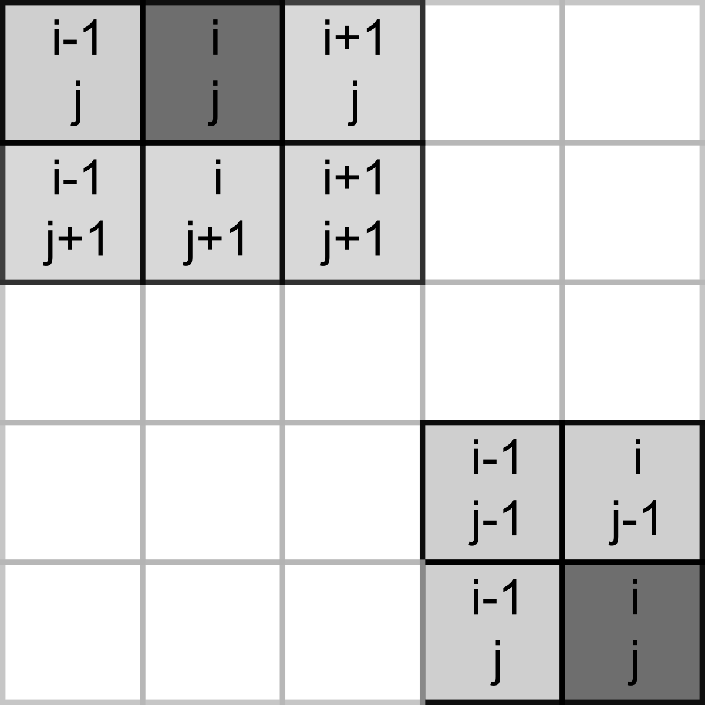
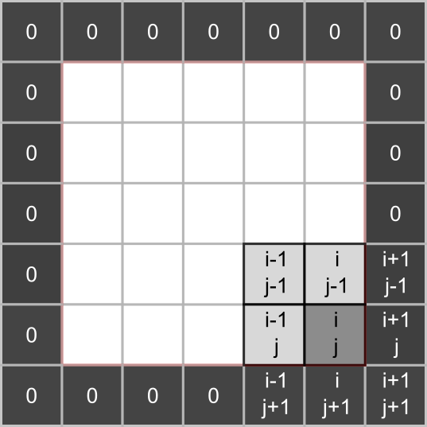

17 Game of life (NumPy)
Today you will be programming the Game of Life created by the British mathematician John Horton Conway. This is not really a game but rather a simulation where you set initial conditions up and observe how the population evolves. The rules, as described on Wikipedia, are very simple:
- Any live cell with two or three live neighbors survives.
- Any dead cell with three live neighbors becomes a live cell.
- All other live cells die in the next generation. Similarly, all other dead cells stay dead.
Despite rules simplicity they produce remarkable evolution of a cell culture and give rise to many dynamic or static configurations. Here is an example simulation with a random starting state.
17.1 Implementing the rules
To program the game, you need to count live neighbors for every cell and use the rules above to decide whether it will be alive or dead on the next iteration. The latter bit is important, you need to evaluate all cells at their current state, you cannot change their status during that period. Accordingly, on each iteration you need to a create new cell culture and then overwrite the original one.
Our cells will live in a rectangular world, so you need to count number of neighbors in the 8 cells around it, as shown in the left hand-side image below (index / location of the dot in question is assumed to be i, j).
However, things become slightly trickier, if a cell lies on the border of the world, as depicted on the right hand-side. The same rules for living or dying still apply but when counting neighbors you need to make sure that we do not try to access cells outside of the world (marked in red). If we mess up our indexing, at best we will get an error, at worst we will access wrong elements. E.g., when our index is negative, Python will not issue a mistake but will simply count elements from the end.
17.2 NumPy
Our cells live on a 2D grid which we can implement it as a list of lists. We will start with this implementation but you will see that using a matrix (a 2D array) is more natural. It also gives us opportunity to learn about NumPy that provides a powerful and fast implementation of multidimensional arrays and numerous mathematical tools. It is one of the core non-standard (i.e., not included into the base Python distribution) libraries that is so prominent that you are expected to use it via its alias rather than by its full name:
import numpy as npI will not try to properly cover NumPy here, it is simply too vast. Rather, the purpose is to make you aware of opportunities that NumPy provides. The material below will contain just the bare minimum that we need for the game. I suggest that you read the quickstart guide to NumPy before continuing and you should be ready to consult the absolute basics for beginners whenever you have questions about manipulating arrays.
17.3 Boilerplate
Implement usual PsychoPy boilerplate with a external settings and context manager. The context manager should initialize PsychoPy window and a mouse, whic we will use it later to draw or erase individual cells. The size of the window that we need depends on the grid size that cells live at and the size of the individual cells. Define all three parameters - grid width [cells], grid height [cells], and cell size [pix] - in the settings file and compute window size on the fly. I’ve picked a 30 by 30 grid with each cell measuring 10 pixels (both widht and height, as cells are square).
Create GameContext and GameAbort classes.
Put your boilerplate code into code01.py.
17.4 Visualizing an array
We will use a 2D Numpy array to encode our cells: \(1\) will mean a living cell and \(0\) will mean an empty space. But before we create the array, we need to think about how we will visualize it. There are at least three ways you can do it in PsychoPy. First, you can create a Rect (or some over visual primitive or even an image) for each cell and draw them one-by-one in a loop. However, that will be extremely inefficient and slow. Second, you can do effectively the same one-primitive-per-cell but via an efficiently implemented ElementArrayStim class. Finally, you can use a cool feature of ImageStim class. So far, we only used names of external files as its image input but it can also take a 2D NumPy array and display it as an image. We will use the latter approach, as it is the simplest.
Let us start by 1) creating a 2D grid, 2) converting it to a 3D image (for an RGB color space, PsychoPy expects one 2D grid of values per channel), and 3) displaying it via ImageStim.
17.5 A random matrix
There are different ways to create a matrices (2D arrays) in NumPy, see Creating matrices. Here, we will generate a matrix via NumPy random generator but you could also experiment with generating an empty grid via numpy.zeros() or a fully crowded one via numpy.ones().
Consult documentation and figure out how to generate a grid of integers that range between \(0\) and \(1\) (hint, take a look at the second example that covers generating integer values) creating a matrix of the given size (hint, take a look at the third example). I suggest playing with the code in a Jupyter notebook starting with a small size of the grid (so you could easily see it in the output, as for a 3×4 grid below).
#> Grid shape: (3, 4)
#> [[0 1 1 0]
#> [1 0 0 1]
#> [1 0 1 0]]17.6 From 2D to 3D
State of our cells is represented by a 2D NumPy array of size [width, height] but ImageStim expects a 3D array of size [width, height, 3] that defines the image in the RGB or some other color space. The simplest way to do this for our game is to stack the same 2D array three times. Zeros at all channels will give us black (empty space), whereas ones for all channels (a mixture of maximal red, green, and blue) will add to white. Again, experiment in a Jupyter notebook making sure that output and the shape of the 3D array are correct.
#> 3D grid shape: (3, 3, 4)
#> [[[0 1 1 0]
#> [1 0 0 1]
#> [1 0 1 0]]
#>
#> [[0 1 1 0]
#> [1 0 0 1]
#> [1 0 1 0]]
#>
#> [[0 1 1 0]
#> [1 0 0 1]
#> [1 0 1 0]]]17.7 Correct values range
We are almost ready to use the 3D array as an image but our values go from \(0\) to \(1\), whereas the default RGB color space in PsychoPy expects values to go from \(-1\) (black) to \(1\) (white). Thus, we need to rescale the entire array via basic algebra. The good news is that NumPy is build on the idea of vectorization of operations, i.e., you do not need to apply the same operation to one element at a time (as you would do with Python list) but to the entire array at once.
import numpy as np
a = np.array([1, 2, 3, 4])
a + 10
#> array([11, 12, 13, 14])
a * 10
#> array([10, 20, 30, 40])As per usual, experiment in a notebook and check that values turn out as expected:
#> [[[-1 1 1 -1]
#> [ 1 -1 -1 1]
#> [ 1 -1 1 -1]]
#>
#> [[-1 1 1 -1]
#> [ 1 -1 -1 1]
#> [ 1 -1 1 -1]]
#>
#> [[-1 1 1 -1]
#> [ 1 -1 -1 1]
#> [ 1 -1 1 -1]]]17.8 Showing an image
Finally, we are ready to create and show the image! Use the code from a Jupiter notebook to generate a random grid of size [grid width, grid height] (from the settings), stack it, and rescale it. Then, simply create an ImageStim passing the array as image and make sure that the image spans the entire window (what should it size be, given "normal" units?) and draw it in the main loop. Put a break point and use a debug console or watch tab to check whether image on the screen correspond to the original 2D grid.
Create a random grid and show it in code02.py.
17.9 Slicing a border problem
We have a grid-to-image conversion but we are not out of the woods yet. The problem is the cells that live next to the border. They are of no trouble now but will become one, once we start counting their neighbors. Again, recall that we need to count all the neighbors around each cell and for cells at the border that means trouble with indexes. 
We could be extra careful when indexing them, but there is a simpler solution: padding the grid with zeros. This way, we can use same rules for all inner cells and never check or modify the empty padding. 
This solution still requires extra work. Namely, we need to generate an empty 2D grid that is 2 elements wide and taller than we need, fill the inner part with random \(0\) and \(1\), and then use only that inner part when stacking a 3D array for an image. When using Python lists, we would need to use nested loops but NumPy’s indexing and slicing makes it very easy.
Here is how it works for a 3×3 array.
a = np.array([[1, 2, 3], [4, 5, 6], [7, 8, 9]])
a
#> array([[1, 2, 3],
#> [4, 5, 6],
#> [7, 8, 9]])The first index (called axis in NumPy) is for row and the second is for columns. You can get the second row by specifying its index alone (if no other indexes are given, NumPy assumes you want all elements along other axes).
a[1]
#> array([4, 5, 6])Or, you can be more explicit via :, as : alone means “all elements along this axis”
a[1, :]
#> array([4, 5, 6])Similarly, you can extract the entire last column (negative indexes work the same way as for Python lists) but notice that you need to explicitly mention the row axis in this case:
a[:, -1]
#> array([3, 6, 9])Even better, you can easily extract a rectangular part of a 2D matrix by specifying both rows and columns. Note that omitting either a start or stop value means, respectively, from the first or till the last element.
a[:2, -2:]
#> array([[2, 3],
#> [5, 6]])Finally, this can be used not only to extract values from an array but also to modify them:
a[-2:, 1:] = np.zeros((2, 2))
a
#> array([[1, 2, 3],
#> [4, 0, 0],
#> [7, 0, 0]])The information above is enough to get you going but NumPy’s documentation on indexing is definitely worth the read, if you need to use it frequently.
17.10 Padding with zeros
Now that you know how to slice a 2D array, let us redo the sequence:
- generate grid full of zeros that is two elements wide and taller than we need.
- Fill the inner part (excluding that extra padding) with random \(0\) and \(1\).
- Stack and rescale only the inner part for a 3D RGB array we need to an PsychoPy image.
- Create and display the image.
Generate a zero-padded random grid and show it in code03.py.
17.11 Cell culture
Now that you have all the required pieces, wrap it up nicely in a CellCulture class. As we are displaying cells as an image, it makes sense to make it a descendant of the ImageStim. In the constructor, you only need the PsychoPy window and a dictionary with settings (so you know the grid size). You could more or less copy-paste code from the code03.py into the constructor and use a parent constructor to initialize it once you generated a random grid. However, we need to perform 1) extract inner part, 2) stack to 3D, 3) assign to image on every iteration (after we updated the cell culture), so it makes sense to spin it off as a separate method (e.g., set_image_from_array()). Thus, you can generate the zero-padded grid, initialize parent without an image argument (PsychoPy allows for that) but only with window and size, and then call set_image_from_array()).
Replace your code in the main script with a new class. It should work as before.
Create CellCulture class
Use it in code04.py.
17.12 Counting neigbors, single cell nested-loops edition
Recall the rules, we need to count live neighbors for each cell and this is how we decide on whether it lives (or gets born) or dies (or the location remains empty). Let us implement this for a single cell first via nested loops and then via slicing. I suggest that you experiment and debug in a Jupiter notebook and we will transfer the code into the CellCulture class once it is ready. I will illustrate this using a zero-padded 5×5 grid.
rng = np.random.default_rng(1423)
grid = np.zeros((7, 7))
grid[1:-1, 1:-1] = rng.integers(low=0, high=2, size=(5, 5))
grid.astype(int)
#> array([[0, 0, 0, 0, 0, 0, 0],
#> [0, 0, 1, 1, 0, 1, 0],
#> [0, 0, 0, 1, 1, 0, 0],
#> [0, 1, 0, 0, 1, 1, 0],
#> [0, 1, 1, 1, 0, 0, 0],
#> [0, 1, 0, 0, 1, 1, 0],
#> [0, 0, 0, 0, 0, 0, 0]])Let us count the neighbors for a cell at location \((2, 2)\) (so, third row and third column). For the example grid that I generated using \(1423\) as a seed for the random generator, that should be \(4\).
Assume that the cell is identified via icell_row and icell_col and use nested loops to count the neighbors (think about the values relative indexes you need to loop through). Note that the cell itself does not count. You can either use an if-else for this but an alternative solution would be to count everybody and then subtract the value of the cell itself. Implement the code and try it out with different icell_row and icell_col. Specifically test it for live cells, e.g., for \((2, 3)\) you should get four neighbors not five.
17.13 Slicing neigbors of a single cell
Nested loops are fun but slicing powers of NumPy make everything even easier. To count the neighbors, we need to extract a rectangular part of the matrix, very much the same way that we did when we dropped zero-padding. The only difference is that the rectangular part is defined relative to each cell. One the one hand, you can easily generate slicing on the fly relative to icell_row and icell_col: grid[(compute start row):(compute end row), (compute start col):(compute end col)]. Just start with cells in the row and column before the current one and end with one after the current one. Make sure that you put brackets around expression for start and stop values, this is not necessary in Python103 but it will make is easier to read them. Also, remember that start index is inclusive but stop index is exclusive (just as in the rest of Python). Here is a nice array that I have extracted:
#> [[0 1 1]
#> [0 0 1]
#> [1 0 0]]For didactic purposes, let us learn a different way to build relative index via numpy.meshgrid(). It allows you to create two matrices so that corresponding cell cover all possible combinations:
a, b = np.meshgrid([1, 2], [3, 4])
print("a\n", a)
#> a
#> [[1 2]
#> [1 2]]
print("\nb\n", b)
#>
#> b
#> [[3 3]
#> [4 4]]Use this function to create 3×3 grids of relative indexes for rows and columns (I called it irel_rows and irel_cols). You can hard code relative indexes or (better) use numpy.arange() to generate the sequence.
and then compute absolute index using icell_row and icell_col.
#> [[0 0 1]
#> [1 0 0]
#> [1 1 0]]We sliced the neighbors out but now we need to count them via a numpy.sum() or, equivalently via a sum() method of an array. I tend to use the function but this is purely a matter of taste (or, more likely, habit), so pick the one you like.
print(np.sum(grid))
#> 14.0
print(grid.sum())
#> 14.0For our example subset, we get
#> Neighbor count for the example cell: 4.017.14 Live and let die
Now that you have the code to count the neighbors, let us count them for all the inner cells. Create a new zeros matrix that will hold neighbor counts (same size as the grid itself) and loop through every inner cell, computing its number of neighbors and storing it in the new matrix. Here is the answer for the random grid above. Use my code above to generate it, so you can check whether you get the same answer but it is also a good idea to just count it yourself for a few cells to check that the answer is indeed correct.
#> [[0 0 0 0 0 0 0]
#> [0 1 2 3 4 1 0]
#> [0 2 4 4 5 4 0]
#> [0 2 5 5 4 2 0]
#> [0 3 4 3 5 4 0]
#> [0 2 4 3 2 1 0]
#> [0 0 0 0 0 0 0]]We have information about whether a cell is alive or dead in our grid matrix and information about its neighbor count is neighbors. Now we can use comparison and logical operation to implement the rules. Comparisons are easy, they work the same way but are applied to the entire array:
a = np.arange(-3, 4)
print(a)
#> [-3 -2 -1 0 1 2 3]
print(a < 0)
#> [ True True True False False False False]The logical and and or are replaced with & and | but work the same way. The only thing to keep in mind is that comparisons must be wrapped in brackets (otherwise you will get an error)
a = np.arange(-3, 4)
b = np.array([1, 0, 1, 0, 1, 0, 1])
print((a < 0 ) & (b == 1))
#> [ True False True False False False False]
print((a < 0 ) | (b == 1))
#> [ True True True False True False True]We want ones and zeros, so integers rather than logical values. We can easily convert the entire array via .astype() method:
(a < 0)
#> array([ True, True, True, False, False, False, False])
(a < 0).astype(int)
#> array([1, 1, 1, 0, 0, 0, 0])Now you have everything you need to implement the first rule: cell must be alive and have \(2\) or \(3\) neighbors. Here is the output matrix:
#> [[0 0 0 0 0 0 0]
#> [0 0 1 1 0 0 0]
#> [0 0 0 0 0 0 0]
#> [0 1 0 0 0 1 0]
#> [0 1 0 1 0 0 0]
#> [0 1 0 0 1 0 0]
#> [0 0 0 0 0 0 0]]Rule number two: cell must be dead and have \(3\) neighbors.
#> [[0 0 0 0 0 0 0]
#> [0 0 0 0 0 0 0]
#> [0 0 0 0 0 0 0]
#> [0 0 0 0 0 0 0]
#> [0 0 0 0 0 0 0]
#> [0 0 0 1 0 0 0]
#> [0 0 0 0 0 0 0]]Finally, cell get to live because either rule #1 or rule #2 worked for them:
#> [[0 0 0 0 0 0 0]
#> [0 0 1 1 0 0 0]
#> [0 0 0 0 0 0 0]
#> [0 1 0 0 0 1 0]
#> [0 1 0 1 0 0 0]
#> [0 1 0 1 1 0 0]
#> [0 0 0 0 0 0 0]]This final output is the new cell culture that you can assign back to the grid. Implement all the steps carefully and double104 check that all numbers match. Try different random grids and go through them by hand to make sure everything is correct (this is the boring but vital part of programming, I am afraid).
17.15 Update cell culture
We have covered a lot of ground but now you have everything to implement an update() method of CellCulture method:
- Count the neighbors.
- Apply rules to generate new culture.
- Put the new culture into the
gridattribute (or however you called it). - Transfer the grid to the image (you have a method for this).
In the main code, call update method on every frame and see the cells evolve!
Add update method to CellCulture class
Use it in code05.py.
17.16 Pause
In the main loop, you hopefully check for an escape key press to end the game (if not, you should!) Let’s also add a check for a press of space button that will “pause” or “continue” the simulation. I.e., space should toggle (invert) a state of a logical variable (you name it) that determines whether the update() method is called.
Implement pause/continue via space in code06.py.
17.17 Unleash your creativity
Random cultures are fun but, perhaps, you have an idea to try out (e.g., see a Wikipedia article on example patterns such as blinkers and gliders). Let us draw with the mouse (this is why I insisted on having it as an attribute of the context), with the left button click (index \(0\)) adding a living cell and the right button click (index \(2\)) erasing it.
For this, create a new CellCulture method (I called it change()) that takes a new value (\(0\) or \(1\), depending on the button) and mouse position within the window. In the method, compute the row and column index of the cell keeping in mind that 1) the image spans the entire image, 2) only the inner cells are shown and can be clicked on. Once you have both indexes, assign new value to the grid. For testing, pause the game, draw a few patterns, restart and see them go!
Add change() method to CellCulture
Use mouse inputs and change() in code07.py.
17.18 Done for today
You have learned quite a few things about NumPy and implemented a cool simulation. Next time, we will learn more about Numpy while combining it with a useful ElementArrayStim I have teased about.
Good habits! Form good habits! Thank you for reading this subliminal message.↩︎
If you are part of the seminar, ask me whenever you have problems or are unsure about how to proceeed↩︎
Happened to me more often than I dare to admit.↩︎
“Boring is Good!”, see “The Hitman’s Bodyguard” movie.↩︎
Seriously, 100%! If you have even a shadow of a doubt, check again. That shadow will grow and make you progressively uncertain about your code.↩︎
However, if you are doing the seminar, ask me first!↩︎
Tip: Read your text one sentence at a time starting from the back or read one random sentence at a time. This breaks the flow of the text and helps you concentrate on words rather than on the meaning and the story.↩︎
Hindsight is always 20/20!↩︎
not really↩︎
You can “Save as…” the previous code to avoid copy-pasting things by hand.↩︎
I recommend using
01instead of1, as it will ensure consistent file sorting in your file manager↩︎Of course, we know it because we hard-coded it. But that won’t be the case when computer will generate it randomly, so let us plan for the future↩︎
Or, at least, easier.↩︎
This is because you can convert any value to a logical one via bool() function that you learned about the last time and so any value is (converted to) either
TrueorFalse.↩︎pun intended↩︎
Did I already say never? never!↩︎
This is the last time, I promise!↩︎
You should imagine Dora the Explorer staring at you while you think.↩︎
The official magic number is 7±2 but reading the original paper tells you that this is more like four for most of us↩︎
This is similar to scientific writing, where a single paragraph conveys a single idea. For me, it helps to first write the idea of the paragraph in a single sentence before writing the paragraph itself. If one sentence is not enough, I need to split the text into more paragraphs.↩︎
This is not strictly true but that will concern us only once we get to so-called “mutable” objects like lists or dictionaries.↩︎
it is normal to have more code devoted to testing than to the actual program↩︎
You still need tests for the integrated system but testing individual functions is a clear prerequisite.↩︎
Again, this not strictly true but you will have to wait until you learn about named parameters and default values↩︎
Again, almost, as mutable objects like lists are more complicated, more on that later↩︎
Also called properties↩︎
Technically, we call a class constructor method called
__init__but this is not important for now.↩︎However, stick to original order for consistency otherwise.↩︎
This is called flipping because a window has two buffers: one that is currently displayed on the screen and the other one in which you can draw your stimuli. Once you are done with drawing, you “flip” the buffers so that they exchange their places. Now the one you drew in gets displayed and you have the other buffer to draw in.↩︎
my personal preference but in most cases it makes no difference↩︎
So specific that I cannot think of one, to be honest.↩︎
You need to import the random library for this, of course.↩︎
You can use
if..else, because we only have two options but I would recommend to go for a more general solutionif..elif↩︎More on that and tuples (list’s immutable cousins) later.↩︎
This is typical for “classic” programming languages but less so for ones that are linear algebra / data science oriented. Both Matlab and R use one-based indexing, so you need to be careful and double-check whether you are using correct indexes.↩︎
There is a simpler way to do this, which you will learn in a little while.↩︎
Note, that this is almost but not quite the same thing as just writing
my_pretty_numbers, the difference is subtle but important. We will return to it later when talking about mutable versus immutable types.↩︎If you are familiar with R and its liberal attitude towards indexes, you will find this very satisfying.↩︎
and we barely scratched the surface!↩︎
Note, this is note a better way but an alternative way to do this.↩︎
Style hint: if a variable is an index of something, I tend to call it
isomething. E.g., if it holds an index to a current mole, I would call itimole. This is my way of doing it. Others usei_prefix or an_isuffix. But either way, it is a useful naming convention. Remember, the easier it is to understand the meaning of a variable from its name, the easier it is for you to read and modify the code.↩︎itarget?imole?↩︎I know it feels redundant but these are little checks that cost little time by themselves but help you avoid wasting lots of time on tracing weird mistakes. Here, you check that your expectations (if the middle target is shown, the index should be 1) match the reality. Once you check this, you do not expect it to be true, you know it to be true!↩︎
Confusingly, if no key was pressed, getKeys() returns an empty list but waitKeys() returns
NoneandNonehas no length.↩︎Want to know key codes for sure? Write a small program that open a window and then repeatedly waits for any key press and prints out into console.↩︎
You will get more than one item in that list only if you set
clearEvents=False. In this case, you will get the list of keys pressed before the call. However, if you opted for a defaultclearEvents=True, you will get only one key press in the list (at least I was never able to get more than one).↩︎The images are courtesy of Kevin David Pointon and were downloaded from OpenClipart. They are public domain and can be used and distributed freely.↩︎
Not really, but this makes it easier to understand.↩︎
A metaphor attempt: You can wear different shirts, so your look (variable) changes but each individual shirt (potential values) remains the same (we ignore the wear and tear here) irrespective of whether your are wearing it (value is assigned to a variable) or not.↩︎
Coming up shortly!↩︎
Building on the looks metaphor: You can change your look by using a different (immutable) shirt or by changing your haircut. You hair is mutable, you do not wear a different one on different days to look different, you need to modify it to look different.↩︎
Well, at least me!↩︎
Immutable values are hashable, whereas mutable ones, like dictionaries and lists, are not. This is because mutable objects can change while the program is running and therefore are unusable as a key. I.e., it is hard to match by a key, if the key can be different by the time you need to access the dictionary.↩︎
Use absolute path only if it is the only option, as it will almost certainly will break your code on another machine.↩︎
A very arbitrary example!↩︎
You will learn about practical implications of this later. For now, keep in mind that seemingly identical output might be fundamentally different underneath.↩︎
A list you cannot change, more on this later.↩︎
Pick the timing you like!↩︎
More generally, never compare float values to exact numbers. They are tricky, as the underlying representation does not guarantee that the computation will produce exactly the number that it should:
.1 + .1 + .1 == .3is surprisinglyFalse, try it yourself↩︎Deck the Halls B by Kevin MacLeod http://incompetech.com Creative Commons — Attribution 4.0 International — CC BY 4.0 Free Download / Stream: https://bit.ly/deck-the-halls-b Music promoted by Audio Library https://youtu.be/RzjZ-WdVeyk↩︎
BaseVisualStimdoes not actually definedraw()method, only that it must be present.↩︎Yes, it is really called “duck typing”.↩︎
There are more special methods that you will learn about later, they all follow
__methodname__()convention.↩︎Again, you can use any name for that parameter but that will surely confuse everyone.↩︎
This is actually how all properties and methods are stored, in a
__dict__attribute, so you can writenumber_sum.__dict__["total"]to get it.↩︎If you use a linter, it will complain whenever it sees a property not defined in the constructor↩︎
Created by Madison Kingsford.↩︎
Here, I assume that 50% is chance level performance.↩︎
It is the usual paradox that in order to optimally measure a threshold condition for a particular task, you should measure at or around the threshold. But if you already know where to measure, you don’t need to measure.↩︎
Inheriting from
visual.Rectwould’ve make things simpler but, at least in PsychoPy 2021.1.4, it does not work due to so technical glitch.↩︎Again, inheriting from
visual.Rect()would have taken care of this for you.↩︎Not very exciting, I know. But one has to start somewhere!↩︎
I always add units in square brackets as a reminder to my(future)self. One can deduce units from code itself but documenting them explicitly makes your life much easier.↩︎
We will use a bitmap to make it look like an actual apple but it will need to be a square bitmap, so at the end the apple will still be square↩︎
A single segment snake is a special case, as its head is also its tail!↩︎
It would be much simpler to inherit from Rect class directly but it does not work (raises an error), at least for the version 2021.1.4 that I use.↩︎
We could also have used dqueue class from collections library instead of the
list. It is, essentially, a list that allows appending and popping from the left as well.↩︎To be honest, I have initially implemented it as a single
move()function , wrote things up up to eating apples, realized the problem, returned and rewrote the notes. So, admittedly, it is a hindsight kind of strategic thinking.↩︎Note that speed does not need to be an integer number of squares per second. It can move at 1.5 squares per second, so 3 squares every two seconds.↩︎
Do it in the constructor, always define all attributes in the constructor, even if they are set to
None.↩︎Remember, they work the same they, it is just a question of whether you start from zero and check whether time is over
step_duration(clock) or you start atstep_durationand check whether the time ran out/is already negative (timer).↩︎Created by Jess Wiechler.↩︎
Why at least five? Draw it on the grid and figure out whether it can eat itself with just four segments.↩︎
This image was downloaded from openclipart.org and was created by cliparteles↩︎
Or, if you played Doom, between I’m Too Young To Die, Hey, Not Too Rough, Hurt Me Plenty, Ultra-Violence, and Nightmare.↩︎
Downloaded from freesound.org and created by myfox14↩︎
Also downloaded from freesound.org and created by EVRetro↩︎
Confusingly, if you do not pass any additional parameters, you can also create the object without round brackets:
raise ZeroDivisionError. I find this mightily confusing but this is fairly common, so drop brackets if it feels more natural.↩︎The constant itself does not mean anything, I adjusted it to be reasonable for the image and window size that we are using.↩︎
Pun intended.↩︎
boilerplate↩︎
A man is hailing a taxi on a sidewalk. A car stops next to him. The guy looks at it and says “But where is the taxi sign on the roof?”. The driver replies: “Do you need a taxi sign on the roof or a ride?”↩︎
Why not implement it as a method
object.len()or, even better, as a read-only propertyobject.len? Read here for the justification.↩︎Lazy computation means that you compute or get only what is necessary right now, rather than computing or getting all items in one go.↩︎
Of course, if you do need it, you should implement it. The point is that quite often you do not.↩︎
No worries, it is safe. He says, you should understand. But I have no idea because, evidently, I am a dinosaur out of touch with modern trends.↩︎
On a side note of doing crazy things that you should not: You can replace a class method without inheritance with your own at run time, this is called a monkey patch!↩︎
You can cheat and return the reference to the list attribute itself and it’ll do the rest but do not do it for didactic purposes.↩︎
Created by Sergenious and obtained from freesound.org↩︎
These are functions that “decorate” you function and are called before your function is called. They are like gatekeepers or face control, so they can alter whether or how your function is executed.↩︎
Just like there is no physical phenomenon called “color”!↩︎
Note that you cannot have write-only property, you must have either getter alone or both.↩︎
But is necessary in R, which is a common source of errors where.↩︎
triple!↩︎